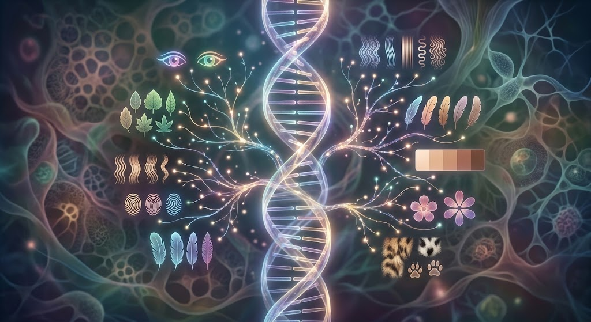

การถ่ายทอดลักษณะทางพันธุกรรม
การถ่ายทอดลักษณะทางพันธุกรรม คือ การส่งผ่านข้อมูลทางพันธุกรรมจากพ่อแม่ไปยังลูกผ่านเซลล์สืบพันธุ์ ได้แก่ อสุจิและเซลล์ไข่ ข้อมูลทางพันธุกรรมอยู่ใน DNA และถูกจัดเก็บอยู่บนโครโมโซม
เกรเกอร์ เมนเดล (Gregor Mendel) เป็นนักวิทยาศาสตร์ผู้ศึกษาการถ่ายทอดลักษณะทางพันธุกรรมจากการทดลองผสมพันธุ์ถั่วลันเตา เขาเสนอหลักการสำคัญ ได้แก่ กฎการแยกของยีน และกฎการรวมกลุ่มอย่างอิสระของยีน
ลักษณะทางพันธุกรรมอาจถูกควบคุมโดยยีนเด่นหรือยีนด้อย สิ่งมีชีวิตจะมีจีโนไทป์ (Genotype) ซึ่งหมายถึงรูปแบบของยีน และฟีโนไทป์ (Phenotype) ซึ่งหมายถึงลักษณะที่แสดงออกจริง นอกจากนี้ยังมีการถ่ายทอดแบบเด่นไม่สมบูรณ์ เด่นร่วม และลักษณะที่ควบคุมโดยยีนหลายคู่ ทำให้เกิดความหลากหลายของสิ่งมีชีวิต